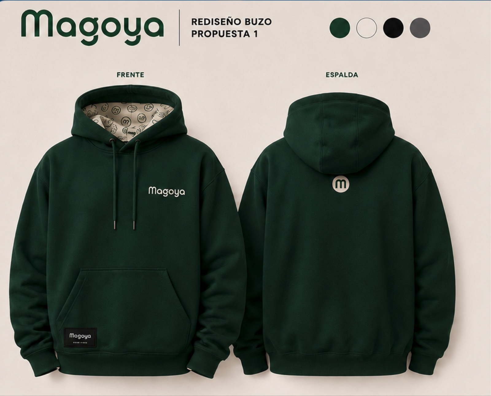

Expertise senior.
Dominio agro. Partnership.
Magoya es el partner de estrategia y desarrollo de producto digital para agribusiness. Nos embebemos como extensión del equipo del cliente — tecnólogos senior, expertos de producto y agrónomos.
Misión & posicionamiento
Desde 2017, Magoya existe para que las agroempresas modernas construyan mejores productos digitales: “Ag software fails on adoption, not on code. We put a senior team inside yours — engineers, product and agronomists — and we test every release on a real operation.” Posicionamiento: Your Digital Product Strategy and Development Partner — where strategy meets execution, and product meets reality. El hero de la marca: “AgTech challenges demand more than code.”
La voz
Traductora. Hablamos agro y software: el trabajo es pasar de uno al otro sin perder precisión. Concreta: ninguna afirmación de valor viaja sin cifra, nombre de cliente, plazo o captura. Directa: oraciones cortas, conclusión primero, cero preguntas retóricas, mínimo de siglas. Filosa cuando hace falta: decimos lo que no cierra — ni hype de IA ni negacionismo. Informal sin ser liviana: voseo en español, humor cuando aliviana una idea, nunca como adorno.
Idioma. Español para cercanía y comunidad; inglés para credencial y cuentas US (nativo-conceptual, con revisión nativa antes de salir); portugués para Brasil. En textos en castellano, mínimo de palabras en inglés — y las que van, traducidas.
Vocabulario propio: levantar el guante · no damos vueltas · talento híbrido · traducir · convertir complejidad en decisiones · señal y ruido · equipo embebido (embedded) · claridad, confianza, compromiso · lote, campaña, ventana de siembra.
- “Embedded teams, not outsourced tickets.” — contraste, siete palabras, sin adjetivos.
- “If it does not work at 6am with one bar of signal, it does not work.”
- “Si después de eso no somos el partner indicado, te quedás con todo.” — transparencia que asume costo propio.
- Preguntas retóricas · superlativos sobre nosotros mismos (“the best”, “unparalleled”).
- “As a service” para lo que es un servicio a medida · siglas internas (DIPI) · “soluciones end-to-end”.
- “Familia” para el equipo · “startup” para Magoya · hype de IA · frasecitas.
La evidencia de cada regla —con citas del Manual de Marca 2022, la estrategia de marca de Varu y las reuniones— está en VOICE-RESEARCH.md.
Logo & avatares
El wordmark redondeado es la firma. Los avatares — extraídos de las letras del wordmark — son el sistema de identidad secundario para redes, favicons y aplicaciones chicas.

Principal · verde digital #00DE68 sobre blanco

Institucional · crema sobre Verde Magoya #133825 (look del buzo)

Neutra · negro #161616 sobre blanco (piezas studio)

Cálida · verde profundo sobre Crema #ECE3DB
Avatares
Siempre círculo verde digital #00DE68 con marca blanca. La cara es el avatar de personalidad (redes sociales, comunidad); la m es el monograma funcional (favicon, app icon). No inventar avatares nuevos ni cambiar los colores.
Reglas & especificaciones
- Aire mínimo alrededor del wordmark: la altura de la “m” en todos los lados.
- Tamaño mínimo: 90px de ancho en pantalla · 24mm en impreso. Menos que eso → usar el avatar “m”.
- Sobre foto: wordmark crema o blanco, siempre con overlay verde profundo.
- Colores permitidos del wordmark: verde digital, negro, crema, verde profundo, blanco.
- No estirar, rotar, inclinar, agregar sombras, contornos ni degradados.
- No usar el wordmark en lima #A2FF00 — el lima es energía, no identidad.
- No recolorear los avatares ni ponerlos sobre fondos que compitan (lima sobre verde digital, etc.).
- No reconstruir el wordmark con otra tipografía ni alterar el espaciado entre letras.
El negro construye.
El verde hace crecer.
Tres verdes con roles distintos + neutros cálidos. Los neutros sostienen ~75% de cada pieza; el verde enciende el ~25% restante. Nunca una pieza 100% negra ni 100% verde. El verde digital y el verde ilustración eran demasiado parecidos como para convivir como dos colores distintos — se unificaron el 6 de agosto de 2026: ahora es un solo verde para identidad, ropa de personajes y soporte.
Proporción de uso
Regla, no guía — confirmado por Varu: esta proporción se mantiene en todo lo que se produce, no solo en piezas de redes.
Valores para producción
| Color | HEX | RGB | CMYK (orientativo) | Pantone (aprox.) | Rol |
|---|---|---|---|---|---|
| Verde Magoya | #133825 | 19 · 56 · 37 | 77 · 39 · 74 · 63 | PMS 553 | Core institucional |
| Verde digital | #00DE68 | 0 · 222 · 104 | 71 · 0 · 77 · 0 | PMS 3282 | Identidad / logo · ilustración / personajes |
| Lima energía | #A2FF00 | 162 · 255 · 0 | 43 · 0 · 100 · 0 | PMS 382 2X | CTA / display |
| Crema Magoya | #ECE3DB | 236 · 227 · 219 | 7 · 9 · 13 · 0 | PMS Warm Gray 2 | Neutro cálido |
| Negro Magoya | #161616 | 22 · 22 · 22 | 0 · 0 · 0 · 91 | PMS Black 5 2X | Texto / dark cards |
Para imprenta crítica (merchandising, buzo) validar CMYK con prueba de color — el lima y el verde digital son colores de pantalla; en papel esperar pérdida de saturación. Los Pantone son el match más cercano por distancia RGB contra la librería Solid Coated (no hay conversión exacta hex→Pantone) — confirmar contra el libro físico antes de mandar a producción.
Combinaciones
- Crema sobre verde profundo · negro sobre blanco/sage · negro sobre lima · lima sobre negro/verde profundo · verde #009145 sobre blanco solo texto grande.
- Lima sobre blanco como texto (1.25:1, no accesible) · verde digital #00DE68 como texto sobre claro · verde sobre verde sin contraste.
Manrope. Una sola familia.
Variable 200–800, self-hosted. Display ExtraBold con tracking apretado (−3%) para titulares; Regular para cuerpo. Los kickers van en MAYÚSCULAS con tracking amplio, en pill o solos.
Emojis
Nunca en títulos. Se permiten únicamente dos familias: manitos que señalan (👈 👉 👇) para dirigir a un CTA, y banderas de países para ubicar geografía. Ningún otro emoji entra al sistema — ni en titulares, ni en cuerpo, ni en slides.
Jerarquía aplicada
Regla de composición: máximo 3 niveles tipográficos por pieza (ej: kicker + display + body). El peso hace la jerarquía, no el tamaño solo: 800 para lo que grita, 400 para lo que explica. Fallback cuando Manrope no está disponible (docs, mails): Arial.
Resaltado en titulares
Dos formas oficiales de encender una palabra: color (sobre claro: verde #009145 y solo en texto grande ≥24px bold; lima sobre oscuro) o subrayado lima. El verde digital #00DE68 como texto queda reservado a fondos oscuros y al logo. Prohibido el bloque de resaltador sólido detrás del texto.
for agribusiness. 95% client retention.
El campo desde arriba.
Las personas en blanco y negro.
Dos familias fotográficas, cada una con su regla. Aérea de campo: color natural con overlay verde profundo para fondos con texto. Personas: siempre B&N con un acento verde o lima — la firma Magoya.
 Aérea · hileras
Aérea · hileras Aérea · terrazas
Aérea · terrazas Aérea · mosaico
Aérea · mosaico Nivel de suelo · cultivo
Nivel de suelo · cultivoPersonas = B&N + acento verde
Varu y Leo ya tienen su retrato real. Falta la sesión de Francisco Facal — es un pendiente abierto del roadmap.
Reglas de fotografía
Aplican a las dos familias de arriba — aérea y personas.
- Gente real del equipo, remera Magoya, luz natural, gesto genuino.
- Overlay verde profundo (55–86%) cuando hay texto encima de foto aérea.
- Nada de stock corporativo posado, apretones de mano, oficinas genéricas.
- Personas a color en piezas de marca — el color es del campo, no del retrato.
Personajes planos.
Semicírculos que crecen.
Personajes de relleno plano redondeado, sin rostro: pants lima o verde, tops grises, zapatillas verdes. Y el motivo de marca: el patrón de semicírculos — brotes geométricos que crecen en diagonal, frescos y orgánicos sin ser literales.


Los personajes acompañan datos y títulos — nunca son el mensaje. Escala grande, recortados por el borde de la pieza (como en las piezas del diseñador), jamás centrados como clipart.
Paleta cerrada de ilustración
Los personajes usan exactamente estos 5 colores — nada fuera de esta lista. Piel y gris ropa son colores solo-ilustración: nunca en UI, texto ni fondos.
ropa verde (verde digital)
ropa lima
ropa gris
piel
pelo / detalle
Ejemplos de uso de personajes
El personaje siempre se integra con el contenido: recortado por un borde de la pieza (nunca flotando entero en el medio) y del lado opuesto al texto. Dos composiciones canónicas:
Personajes: usos y no usos
- Sí: employer brand, cultura, “cómo trabajamos”, footprint, piezas de proceso o método.
- Recortado por un borde, del lado opuesto al texto, escala grande (40–55% del ancho).
- Sobre lienzo plano (blanco, sage, crema o verde profundo).
- No: casos de cliente, métricas de negocio, propuestas comerciales — ahí va foto real o dato.
- Centrado como clipart, flotando entero, chico, o dos personajes de distintas escenas juntos.
- Sobre fotografía — nunca. Son dos lenguajes de imagen compitiendo.
Motivo semicírculos
El patrón heredado del brand original: semicírculos en grilla diagonal escalonada, verde digital sobre crema. Se usa como paño de textura, no como remate decorativo. Regla de sangrado: el paño va al corte y siempre nace de un borde de la pieza o queda detrás de un objeto — nunca cortado flotando en el aire.

Colores del paño: verde digital sobre crema o blanco · crema sobre verde profundo. Retirados del sistema: la banda festoneada (no funcionaba como remate) y los motivos de líneas (caminos concéntricos, estratos).
Marcas a mano — cómo se aplican
Dos marcas, dos trabajos. Van siempre en verde digital #00DE68 sobre fondo claro (o lima sobre oscuro) — nunca en negro, porque contra el texto no resaltan. Una sola por pieza, sobre texto ya compuesto. El círculo es un solo trazo (nunca doble pasada) y va por detrás del texto — la letra siempre queda adelante, la marca nunca la tapa. El subrayado quedó fuera del sistema: no cubría bien la palabra completa y el trazo no tenía la fuerza que pide una marca. La palabra que carga el sentido de un titular va en lima, no con una marca a mano.
el 6 AGO
Círculo → marca una fecha o un dato puntual, como en el calendario. Envuelve con aire; nunca sobre frases largas.
por acá
Flecha → señala el CTA. Nace del texto y su punta cae sobre el botón: la diagonal es parte del mensaje, no un adorno al costado.
- Una marca por pieza · verde digital sobre claro, lima sobre oscuro · sobre texto compuesto.
- Marcas en negro (se pierden contra el texto), dos marcas juntas, o usarlas como adorno suelto.
Un protagonista por pieza
La marca tiene siete recursos gráficos. La regla que los ordena: máximo dos por pieza además de la tipografía — uno protagonista y otro que acompaña en segundo plano. Con tres o más, la pieza deja de ser Magoya y se vuelve ruido.
Matriz de combinación
| Combinar… | Foto aérea | Foto B&N | Personaje | Paño ○ | Marca a mano | Ícono |
|---|---|---|---|---|---|---|
| Foto aérea | — | |||||
| Foto B&N (personas) | — | |||||
| Personaje ilustrado | — | |||||
| Paño de semicírculos | — | |||||
| Marca a mano | — | |||||
| Ícono | — |
conviven no conviven
La razón de los vacíos es una sola: dos lenguajes del mismo tipo compiten. Dos imágenes (foto + foto, foto + ilustración), dos texturas (foto + paño) o dos dibujos (personaje + ícono) nunca conviven. La cifra gigante y la tipografía combinan con todo: son la voz, no un recurso.
Cómo se ve bien: personaje + paño
La combinación que preguntaba el equipo sí funciona, con una condición: el paño va al fondo y en una franja, el personaje al borde opuesto y en primer plano, y el texto sobre superficie limpia. Nunca superpuestos.
- Paño al fondo en franja · personaje al borde · texto sobre superficie limpia · un solo acento de color.
- Personaje encima del patrón, texto sobre el patrón, o el personaje centrado tapando el paño.
Ocupar el espacio
Si un recurso está en la pieza, es para que se vea. Nada de elementos chiquitos puestos como detalle: el gráfico ocupa el ancho de su columna, la cifra ocupa ~70% del bloque, el personaje 40–55% de la pieza, el paño llega al corte. Un recurso que no se lee de lejos no aporta — o crece, o se saca.
Jerarquía de planos
Todas las piezas de Magoya se ordenan en cuatro planos fijos: (1) lienzo — color plano o foto con scrim · (2) textura — paño de semicírculos, siempre al corte · (3) sujeto — personaje, foto recortada o cifra gigante · (4) voz — tipografía, marcas a mano, chips y CTA. Un recurso por plano como máximo, y los planos 2 y 3 nunca se pisan entre sí.
Íconos de línea redondeada
Trazo 2px, terminaciones y esquinas redondeadas — el mismo ADN del wordmark. Monocromos y recoloreables: negro sobre claro, crema sobre oscuro, lima solo el ícono destacado de la pieza. Nunca rellenos sólidos ni 3D.
Set agro — el corazón del sistema (16 íconos)
Los mismos archivos que usa Magoya Studio (assets/studio/icons/agro/) — una sola fuente para manual, piezas y producto.
Sobre claro y sobre oscuro
Mismo set, dos teñidos. El ícono destacado cambia de color según el fondo: sobre oscuro va en lima #A2FF00; sobre claro, en verde #009145 — el lima sobre blanco no resalta (1.25:1). Uno destacado por pieza.
Además del set agro hay 58 íconos generales en 7 categorías (producto & UX, datos & AI, plataforma, negocio, comunicación & redes, sistema) en la librería de íconos, y los logos de IA (OpenAI, Claude, Gemini…) y redes en assets/studio/icons/.
Íconos a escala grande — lo que ya funciona en los slides
En el deck kit el ícono no siempre es un detalle chico: en varios módulos carga peso visual real. Tres formas ya probadas, con el módulo de origen:
① Ícono como protagonista del statement — módulo A5② Ícono en badge circular, grilla de capacidades — módulo B3③ Ícono como líder de fila, capacidades de AI — módulo K2
Botones, chips & cards
Todo redondeado — como el logo. El CTA primario es lima; el institucional, verde profundo. Los chips categorizan; las cards muestran gente, datos y quotes.
Botones — tres niveles
Un solo primario por pantalla o pieza. El resto acompaña. Todos son rectángulos con radio 10px (nunca pill) y todos tienen hover.
Primario · lima
La acción que queremos. Uno por pieza: contacto, inscripción, descarga.
Secundario · verde profundo
Alternativa válida al primario: ver casos, agendar, seguir leyendo.
Terciario · outline
Acción de bajo compromiso o secundaria en cards: saber más, ver detalle.
Sobre claro y sobre oscuro
Sobre claro → primario lima con texto negro · secundario verde profundo con texto crema · terciario outline verde profundo.
Sobre oscuro → el primario no cambia (lima); secundario y terciario invierten a crema — sólido y outline respectivamente.
- Un primario por pieza · label en sentence case · hover siempre definido.
- Dos primarios compitiendo, botones pill (eso es chip), o botones sin estado hover.
Chips / pills
Botón ≠ chip. El botón es un rectángulo de radio 10px con fondo sólido — es acción. El chip es una pill outline: borde y texto del mismo color, fondo transparente — es etiqueta, y lleva solo texto: nunca un punto/bullet delante ni un ícono adentro (la pill ya delimita; el punto es ruido). Nunca un chip con fondo sólido ni un botón pill.
Sobre claro (blanco, sage, crema) → borde y texto en verde profundo #133825 (default), verde #009145 para categoría destacada, o negro #161616 para etiqueta neutra.
Sobre oscuro (verde profundo, negro) → borde y texto en crema #ECE3DB (default) o lima #A2FF00 para el chip destacado — uno solo por pieza.
Cards — siempre en mosaico
Las cards nunca van sueltas: viven encastradas en mosaico — misma grilla, mismos aires, alturas que calzan. El contacto dentro de una card dark es un link en lima, no un botón (los botones viven fuera de las cards). El monograma “m” circular no va en cards: el avatar es identidad de canal (favicon, perfil, pie de papelería) y dentro de una card suma un segundo logo que compite con el wordmark. En una card, la marca es el wordmark.

“Magoya’s expertise in UX, digital ag platform development, and agronomic know-how made our transformation possible.”
Logo wall — Who we build with
Siempre logos reales, en grilla pareja sobre blanco o sage, en gris para no competir con la pieza. Set completo en logos de clientes & stack.


La marca en acción
Cómo se ve Magoya en cada canal: web, redes sociales, presentaciones y piezas de contenido. La portada del hero es la pieza canónica — foto aérea + overlay verde profundo + wordmark crema + display con acento lima: si una pieza nueva no conversa con ella, no es Magoya.
Web — hero canónico
Contact us
Digital product development for agribusiness
La receta: foto aérea real · scrim verde profundo 55–86% · wordmark crema arriba-izquierda · CTA lima arriba-derecha · display ExtraBold abajo-izquierda con una frase en lima.
Web — favicon & app icon aplicados
El mismo avatar "m" ya está aplicado como favicon real en las 9 páginas de este sistema — no es una maqueta.


Implementación: <link rel="icon" type="image/svg+xml" href="favicon.svg"> + PNG de respaldo en 32/16px + apple-touch-icon 180px. El SVG fuente es assets/avatars/avatar-m.svg — mismo archivo, sin editar.
Redes sociales — feed (1:1)
Tres recetas de feed: foto (statement sobre aérea) · crema (aviso con avatar de comunidad) · dark (dato lima + personaje recortado). Rotarlas mantiene la grilla variada y reconocible.
Redes sociales — story (9:16), banner y avatar


Avatar de perfil: la cara para redes de comunidad (IG, X), la m para canales corporativos (LinkedIn). Banner de LinkedIn: panel negro sólido a la izquierda con wordmark crema y tagline siempre nítidos + foto limpia a la derecha — cuerpo en B&N con blur sutil, hombros y cuello reconocibles como persona sin mostrar la cara, y el wordmark de la remera completo y sin nada encima — + filete verde digital al borde. Tres personas reales, misma receta.
Presentaciones
El sistema completo de slides vive en módulos de presentación: 41 módulos en 13 familias con la escala del diseñador (126/84/56/42pt), lienzos blanco/sage, un golpe de lima por slide y máximo dos recursos gráficos. Cada módulo se exporta a .pptx. Las piezas comerciales (one-pager, flyers) están en plantillas comerciales.
Contenido — módulo de métricas
Build a digital product
for an Input Company
Especificaciones de export
- Slides: 16:9 (1920×1080) · margen interior = 7% del ancho en todos los lados · tipografía 126/84/56/42pt.
- Favicon / app icon: avatar “m” · 16/32/180/512px · el círculo llega al borde del lienzo, sin padding extra.
- Social: feed 1:1 (1080×1080) · carrusel retrato 4:5 (1080×1350) · stories 9:16 (1080×1920, zona segura 96px arriba/abajo) · wordmark arriba-izquierda, CTA lima arriba-derecha. Los 13 formatos de red viven en Magoya Studio.
- Print: A4 con sangrado 3mm · validar CMYK con prueba de color (lima y verde digital pierden saturación en papel).
La marca puesta
Regla madre del merch (del modelo de producción del buzo): verde profundo + crema, discreto y premium. Wordmark chico en pecho izquierdo, monograma en espalda, patrón de avatares solo en interiores/forros. Nada de estampas gigantes ni lima en textil. El merch se muestra siempre con foto/render real — los esquemas de abajo son especificación de producción, no presentación.
Catálogo de merch — fotos reales
Regla: el merch se muestra SIEMPRE con foto o render real del producto — nunca con ilustración ni esquema vectorial. Cada producto abajo tiene su especificación de aplicación; los que aún no tienen foto muestran el slot con el nombre de archivo esperado.
Para completar el catálogo: dejar las fotos en assets/photos/merch/ con el nombre indicado en cada slot (JPG, lado largo ≥1600px). Se muestran solas al recargar.
Especificación de producción — Buzo, Propuesta 1
El buzo ya tiene render real (arriba, primer producto del catálogo) y define el estándar de calidad para el resto del merch textil — no es la referencia a mostrar primero, es la guía de medidas y colocación:

- Frente: wordmark crema bordado, pecho izquierdo.
- Espalda: monograma “m” crema bajo el cuello.
- Forro de capucha: trama de avatares crema/verde (tile 80×80mm, espaciado 20mm).
- Parche canguro: “Magoya · since 2017” 65×35mm.
- Colorways aprobados: verde profundo · crema · negro · gris.
El vector de bordado del pecho (60mm, crema) se baja de la librería de assets; el resto de los vectores de producción (monograma 30mm, trama capucha, parche) siguen en la carpeta “Diseño buzos”. Remera, gorra, vaso y cuaderno: pendiente foto real — hasta entonces, solo especificación.
La referencia de calidad es el render del buzo (guía de producción con colores y espaciados). Toda pieza textil se valida contra ella: bordado antes que estampa, tono sobre tono antes que contraste, crema #ECE3DB y verde #133825 como dupla fija, y sin lima en textil.
El logo en documentos
Membrete, firma de email y reglas para documentos del día a día — donde la marca más se degrada si no hay sistema.
Buenos Aires, 3 de agosto 2026Membrete A4. Wordmark verde arriba-izquierda (20% del ancho), texto en Manrope (fallback Arial), pie con filete verde digital + avatar “m”. Sin marcas de agua ni fondos.
— Saludos,

Firma de email. Va siempre el wordmark — nunca los avatares ni la cara. Estático o animado (arriba se ve en vivo: las letras aparecen una por una y se detiene sobre el logo completo). Filete verde + nombre 700 + rol y datos en gris. Debajo del contacto, dos elementos opcionales: el ícono de LinkedIn (16px) y el link a AI en campo — la única marca anexa que amerita su propia línea en la firma. El LinkedIn es a elección de cada persona: la página de Magoya como base, o el perfil personal si lo prefiere — cada uno carga el link que le corresponda. Sin banners, sin frases legales eternas, sin más logos de redes que ese.
Descargas de papelería
{kind=link}
{kind=link}
{kind=link}
{kind=link}
Cómo se sube la firma a Gmail
- Subí el GIF a un lugar público (Drive con link público, el sitio, cualquier hosting): Gmail no permite insertar un archivo local en la firma, necesita una URL.
- Gmail → Configuración → Ver todos los ajustes → General → Firma → Crear nueva.
- Escribí el texto primero (Nombre, Rol · Magoya, magoya.com, teléfono) en Arial — Gmail no soporta Manrope.
- Cursor donde va el logo → Insertar imagen → Dirección web (URL) → pegá la URL → tamaño Pequeño (~120px).
- Guardá los cambios al pie de la página. Donde el cliente no anime GIF se ve el último frame, que ya es el logo completo.
- Si querés sumar el ícono de LinkedIn y el link a AI en campo (como en el ejemplo de arriba): insertalos igual, con Insertar imagen → Dirección web (URL) el ícono, enlazado a la página de Magoya o a tu perfil personal (los dos son válidos, elegís vos), y como texto con link el link de AI en campo.
Cómo está construido: el wordmark oficial en verde digital; las letras entran de a una con un leve rise y se detiene sobre el logo completo — 12 frames, sin loop (una sola pasada, nunca vuelve a blanco), fondo blanco (los clientes de correo no manejan bien la transparencia). Se genera desde el SVG del wordmark, nunca se redibuja.
Reglas en documentos
- Docs y slides internos: wordmark en esquina superior izquierda, tamaño discreto (≤ 1/5 del ancho).
- Tipografía de documentos: Manrope; si no está instalada (Google Docs de terceros, mails), Arial — nunca otra.
- PDF externos siempre desde las plantillas de piezas comerciales.
- Logo como marca de agua gigante, en gris lavado, o repetido por página.
- Avatares como viñetas de lista o adornos — son identidad, no decoración.
Lo que nunca se negocia
- El negro construye, el verde hace crecer — neutros ~75%, verde ~25%, un solo movimiento verde dominante por pieza.
- Lima #A2FF00 = energía en dosis única: un CTA, un display o un motivo por pieza. Nunca dos golpes de lima compitiendo.
- Verde digital #00DE68 = identidad (logo, avatares). Lima ≠ logo.
- Personas reales en B&N con acento verde. Ilustración plana para conceptos.
- Logos de clientes SIEMPRE reales — jamás placeholders.
- Todo redondeado: pills, cards, radios generosos — como el wordmark.
- El motivo va al corte: nace de un borde o de detrás de un objeto — nunca cortado al aire.
- Máximo dos recursos gráficos por pieza además de la tipografía — uno protagonista, uno que acompaña.
- En la firma de email va siempre el wordmark, nunca los avatares.
- Emojis en títulos o en cualquier texto — salvo manitos que señalan y banderas de países.
- Resaltador sólido detrás de palabras. Usar color o subrayado lima.
- Gradientes glossy, 3D, simetría perfecta, estética “hecha por IA”.
- Slide 100% negra o 100% verde. Siempre equilibrio.
- Personajes con rostro, estilo infantil o monoline — quedaron descartados.
- La metáfora del puzzle (brand viejo) queda retirada en todas las piezas — su reemplazo narrativo es el crecimiento (paño de semicírculos).
- Naranja y amarillo del brand viejo — fuera de la paleta. Los acentos son verdes o lima.
- La banda festoneada y los motivos de líneas (caminos, estratos) están retirados: el único motivo es el paño de semicírculos.
- El monograma “m” circular dentro de una card — el avatar es identidad de canal, no marca de pieza.

AI en campo
La línea de contenido educativo de IA para el agro tiene su propio manual: no es una sección de este brand, es una marca anexa que comparte el ADN (Manrope, verdes oficiales, wordmark intocable) pero maneja su propio lienzo, su propio ruido y su propia voz.
Las piezas se producen en Magoya Studio a partir de plantillas — la de la izquierda es real, exportada del Studio: template fecha-marcada, formato ig-portrait (1080×1350).